真实会话页（本分支 build + ui-migration fixtures，1440 宽，2x）。三列同一页面，只换 .composer-box 的 box-shadow。
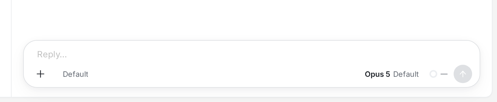
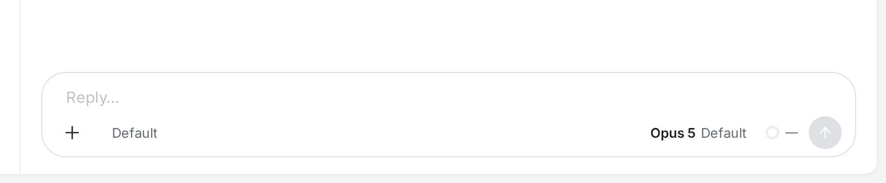
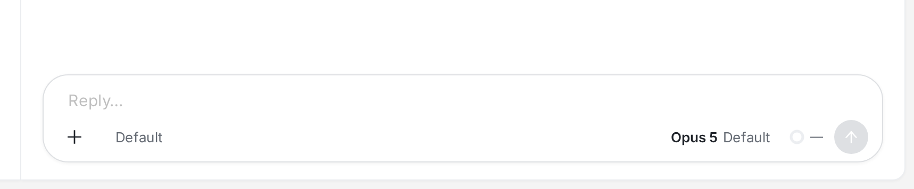
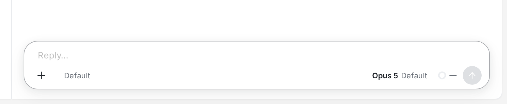
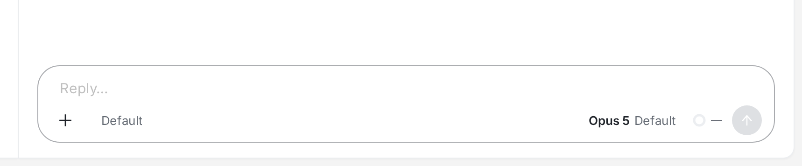
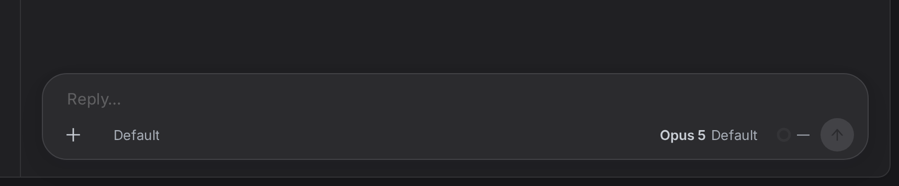
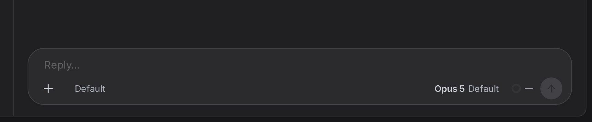
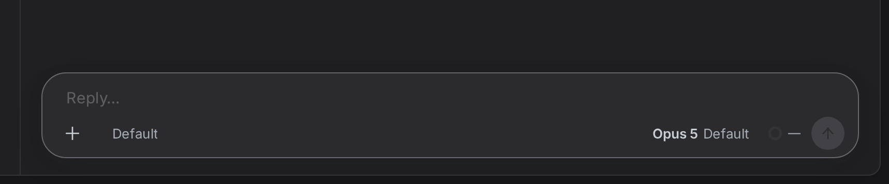
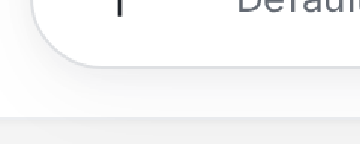
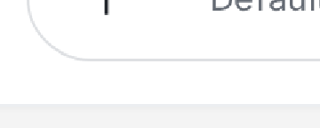
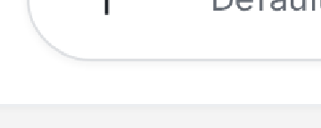
| 框下第 1px | 框下 8px | 到栏底时 | 深色 | |
|---|---|---|---|---|
| ① 今天 | 242 | 249 | 252，被栏底切断 | 30 vs 32，看不出 |
| ② 无阴影 | 255 | 255 | 255 | 32，看不出 |
| ③ 小阴影 | 249 | 255 | 255 | 31 vs 32，看不出 |
阴影颜色 rgba(31,35,41) 在深色 #2b2b2e 上几乎不可见，三种方案深色下一样；差别只在浅色。
只改 src/web/src/index.css 的 .composer-box（约 7452 行）与聚焦规则（约 7462 行）的 box-shadow；transition 去掉 box-shadow。描边、圆角、聚焦加深描边、shell 模式红框都不动。